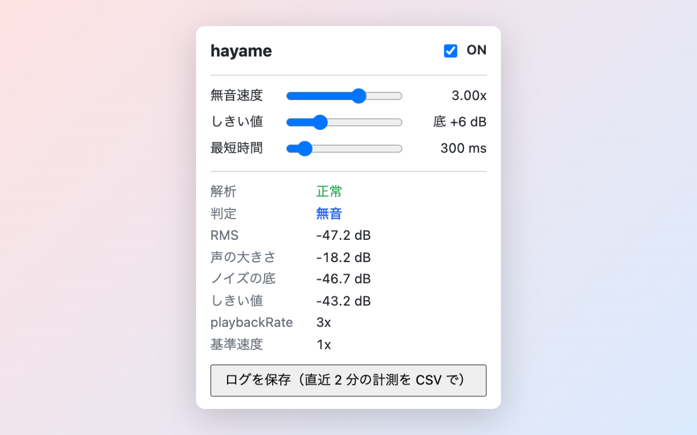

hayame
YouTube の動画で、人が喋っていない区間だけを自動で速く再生して、間を詰める Chrome 拡張機能です。Chrome 標準の Picture-in-Picture もショートカットで開けます。

機能
- 無音だけを倍速 音がほぼない区間だけを無音速度（既定 3 倍）で再生し、話し始めたらすぐ元の速度に戻します。
- しきい値は自動 直近 1 分の音量から、その動画の「声の大きさ」と「静かなときの音量」を推定して、無音のしきい値を決めます。喋り続けていて間がない動画では、倍速にしません。
- いつもの速度はそのまま YouTube で 1.5 倍などに変えた速度を基準にして、無音の間だけ速くします。
- ⌥ P で Picture-in-Picture 再生中の動画を Chrome 標準の Picture-in-Picture で開きます。PiP 中も無音の倍速は効きます。
-
失敗したら止まる
音声が取れないときは倍速にせず、元の速度のまま、ツールバーのアイコンに
!を出します。再生音を消すことはありません。
インストール
-
GitHub のリリースから
hayame-X.Y.Z-chrome.zipをダウンロードして展開します。 - Chrome で
chrome://extensionsを開き、右上の「デベロッパーモード」を有効にします。 - 「パッケージ化されていない拡張機能を読み込む」をクリックし、展開したフォルダを選びます。
初期設定は不要です。YouTube で動画を再生すると、そのまま動きます。
使い方
YouTube（www.youtube.com）で動画を再生すると、自動で動きます。速度は YouTube の画面でいつもどおり変えられます。
ポップアップ
ツールバーの hayame のアイコンを押すと開きます。
| 項目 | 既定 | 説明 |
|---|---|---|
| ON / OFF | ON | OFF にすると元の速度に戻して止まる |
| 無音速度 | 3 倍 | 無音の間の速度。Chrome は 4 倍を超えると音声を消すので、4 倍まで |
| しきい値 | +6 dB | 静かなときの音量にこれを足した値を下回ると、無音の候補にする。上げると無音と判定しやすくなる |
| 最短時間 | 300 ms | しきい値を下回る状態がこれだけ続いたら無音にする |
下半分には、いまの音量・しきい値・判定・速度がリアルタイムで出ます。「ログを保存」を押すと、直近 2 分の計測を CSV ファイルに保存できます（判定の調整用）。
アイコンのバッジ
| バッジ | 状態 |
|---|---|
ON（緑） |
動作中 |
3x（青） |
無音を倍速中。数字はいまの速度 |
!（赤） |
音声が取れず、倍速していない。理由はアイコンにカーソルを載せるか、ポップアップで見られる |
OFF（灰） |
OFF |
Picture-in-Picture
⌥ P（Windows は Alt P）で、再生中の動画（複数あれば一番大きいもの）を Picture-in-Picture で開きます。もう一度押すと戻ります。YouTube 以外のサイトでも使えます。ショートカットは chrome://extensions/shortcuts で変更できます。
うまく動かないとき
- アイコンが
!で「AudioContext が suspended」と出るときは、ページを一度クリックすると動き出します（ブラウザの自動再生の制限のため）。 - ミュート中は判定しません。
- 話し始めを検知するまでのわずかな遅れで、話の頭が少し詰まって聞こえることがあります。
データの扱い
動画の音声は、ブラウザの中で音量を測るためだけに使い、保存も送信もしません。YouTube の画面の構造や内部のデータには触れず、Web 標準の API だけを使います。設定はブラウザの拡張機能用の保存領域に保存します。詳しくはプライバシーポリシーを見てください。